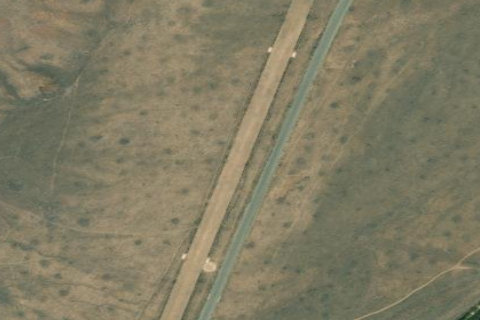

TWIN BRIDGES
U61 · ID

Aerial imagery source: Esri, Vantor, Earthstar Geographics, and the GIS User Community
| Identifier | U61 |
|---|---|
| State | ID |
| Runway length | 4,450 ft |
| Runway width | 100 ft |
| Surface | TURF-DIRT |
| Runway | 18/36 |
| Elevation | 6,900 ft |
| Ownership | public |
| CTAF | 122.9 |
| Coordinates | 43.94369444, -114.11025 |
Notes
[idaho_itd] State Airfield [shortfield] Location Overview Twin Bridges Airport sits in a narrow, high-elevation valley in Custer County, roughly 22 miles northeast of Ketchum, Idaho, at an elevation of about 6,900 feet. The strip runs alongside the Big Lost River and is hemmed in on both sides by steep, high mountains, giving it the classic feel of an isolated Idaho backcountry airstrip rather than a conventional airport. Camping & Recreation The strip is camper-friendly, with a known spring water source located about a quarter mile south of the hangar. Its riverside setting along the Big Lost River makes it a natural base for fishing, hiking, and enjoying the surrounding mountain scenery, and it's popular with backcountry pilots looking for a scenic overnight stop. Soda Springs is noted a few miles downstream for those exploring further afield. Notes & Warnings The single turf runway (3/21, roughly 4,450 by 100 feet) sits in a tight mountain valley, and approaches to Runway 21 must be flown off the extended centerline because a mountain intrudes on the straight-in path, demanding careful terrain awareness. There is no winter maintenance, so the field is best suited to fair-weather flying, and pilots should expect no fuel or FBO services on-site. As with most high-elevation backcountry strips, density altitude, mountain winds, and limited services call for solid mountain-flying experience and thorough preflight planning. History Twin Bridges Airport has been in operation since April 1956 and has long served as a state-owned public-use backcountry airstrip under the Idaho Transportation Department's Division of Aeronautics. It emerged as part of Idaho's broader network of remote mountain airstrips built to support access to backcountry recreation, ranching, and wilderness areas that are otherwise difficult to reach by road. Over the decades it has remained a low-traffic, general-aviation-oriented field, mostly used by pilots flying for recreation, camping trips, and air taxi service rather than commercial operations, preserving its rustic, undeveloped character to this day.